VISIONS OF A SEA
“The ocean is just lovely, wouldn’t you agree?”
(E1)1-21-1, or Dreams of a Restless Sea, is a carved stone object measuring 86 cm with a radius of 28 cm. The composition of (E1)1-21-1 is most similar to polished stone. The object is grey in colour with a hole boring through the side. The object is carved in a way such that its form is vaguely reminiscent of waves. (E1)1-21-1 is much heavier than an object of its size and composition should be.
Various effects occur when personnel are put in (E1)1-21-1's chamber for various lengths of time. The initial effects are influenced by the participating person's psyche, with a gloomy person experiencing vastly different effects compared to a cheerful person. However, conditions in the containment chamber will always worsen after 6 minute have elapsed, regardless of the participant's psyche.
TEST LOG
REPORT #1
Subject designated 'One' is a young male who got engaged with his significant other just two days prior to testing. One reported being "hopeful about the future" and displayed enthusiasm about testing with (E1)1-21-1.
One enters (E1)1-21-1's containment chamber.
One describes feeling calm even as the air in the containment chamber is replaced with water. One comments on a patch of light on the floor as if the sun were beaming down onto the floor despite the lack of windows in the containment chamber. This light was picked up on camera.
1 minute elapses. Sediment piles onto the floor from an unseen source. One sits down and runs his hands through the soft sediment. The room becomes noticeably teal on the camera feed.
3 minutes elapse. When asked, One says he's having fun and eagerly awaits what else will change. Colourful corals rise up from the established seabed alongside wavy aquatic plants. All manifested lifeforms have no known life equivalent. One is reminded not to touch the corals and plants and appears visibly disappointed for a moment.
4 minutes elapse. Unidentified fish swim out from behind One and the camera's lines of sight. One shows a great degree of self-restraint as he passively watches the fish swim around him. The room has become noticeably darker. With the exception of the door, the walls have vanished.
6 minutes elapse. Visibility in the room has dropped significantly. The fish have limited themselves to the corals. One begins to show signs of distress.
One ends the test session and exits the containment unit. The containment chamber's dark water remains suspended within the room as the door opens and One leaves. The containment chamber is rapidly engulfed in darkness and any attempts to shine a light into the room have been met with total light absorption. After a minute of pure darkness, the room returns to its barren, pre-test state. One later would report no lasting psychological harm from the testing.
REPORT #2
Subject designated 'Two' is a middle aged female who had gotten divorced two and a half months prior to testing. Two reports being tired and doesn't think much of the future, stating that it causes her stress. She reports feeling indifferent to (E1)1-21-1 testing but is looking forward to getting it done.
Two enters (E1)1-21-1's containment chamber.
Two sits down on the floor, resting her head on her left hand. When asked what she thought about the room's air spontaneously transforming into water, Two simply said "cool".
1 minute elapses. Silt particles begin mixing with the water. The room becomes murky. Two begins to show signs of distress as visibility lowers.
3 minutes elapse. Clarity had been restored as the sediment settles on the floor. Excluding the door, the walls have disappeared. Two is looking around the containment chamber anxiously, stating she feels "a presence".
4 minutes elapse. Unidentified organisms are seen borrowing, crawling, or exist anchored to the sediment. The water has gradually become completely dark. Two wishes to stop the testing.
Two has ended the test session. Identical to what occurred in Report #1, the containment chamber became engulfed in an impenetrable darkness which dissipated after a minute. Two reports having acquired a fear of the ocean.
REPORT #3
Subject designated 'Three' is a middle aged male Kakratian terrorist captured in battle just 3 weeks prior to testing. Three is a member of the Expendable Test Subjects Program. Three is uncooperative and dangerous. It can be inferred from Three's actions and words that he is not looking forward to (E1)1-21-1 testing.
Due to Three's uncooperativeness, he is forcefully shoved into (E1)1-21-1's containment chamber. Three approaches (E1)1-21-1 and attempts to kick it but fails due its abnormally high weight.
When the room's air is replaced with water, Three shows signs of extreme distress. When asked about it, Three shouts expletives in Kakratian and demands to be let out.
1 minute elapses. The floor disappears along with the walls. (E1)1-21-1 stretches down as far as camera visibility allows. The water has become completely dark. Three shows visible signs of panic. Three swims up to the ceiling and bangs on it.
3 minutes elapse. No changes are observed in the containment room. Three stays with the ceiling.
4 minutes elapse. Bioluminescent lights are observed moving quickly in the darkness. Three is heard reciting a prayer in Kakratian.
6 minutes elapse. An unidentified supermassive fish begins circling beneath Three. The fish sports equally spaced bioluminescent spots along the sides of its body. It is estimated to be about 74 meters in length with its skull height being around 5 meters.
7 minutes elapse. The unidentified supermassive fish lunges its open maw towards Three. The fish's jaws clamp down on Three, leaving a bump on the ceiling as it does so. With little effort, the fish swallows Three whole.
8 minutes elapse. With the containment chamber empty, an impenetrable darkness falls. Upon entering the containment chamber, cleanup staff discovered a severed arm on the floor. Later analysis confirmed that the arm belonged to Three.
Written by Overseer Penumi of the Archival Team.
Note by Overseer Suriel, Head of Observation: These results are quite fascinating... I shall personally request additional expendables for the testing of (E1)1-21-1.